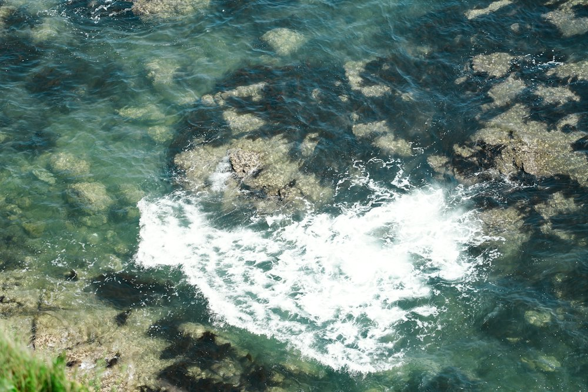

自然历年规律华东
钱塘江大潮
Qiantang River Bore · 中国 · 杭州/海宁
最佳时间
农历八月十八（约 9–10 月）
农历八月十八前后最大。
钱塘江涌潮，潮头如墙推进，盐官一带观潮最盛。
不能错过
- 盐官观潮
- 一线潮 / 回头潮
当地美食
杭帮菜西湖醋鱼/龙井虾仁，观潮前后杭州本味
海宁缸肉盐官古镇的缸焖红烧肉
蟹黄汤包钱塘江鲜时令，观潮日限定
定胜糕海宁米粉糕，讨口彩的甜点
旅人提醒
- 切勿下堤
- 台风季注意
月度热力与气温
9°
1
11°
2
15°
3
20°
4
25°
5
28°
6
32°
7
32°
8
28°
9
22°
10
17°
11
11°
12
适宜度（柱高，5=最佳）依据活动窗口与气候整理；气温为月均高温近似值（°C），仅供规划参考，出行前请查当地预报。
编辑核实笔记 · 整理自公开资料，非亲历；配图为示意，现场以官方公告为准。
预订 / 官网
官方页面：查看官网 / 官方信息 ↗ · 票价与预约以官网为准
联盟链接含占位 tracking id（Booking/Klook/Trip.com），上线替换为真实 ID 即生效；均带 utm 参数与点击统计。